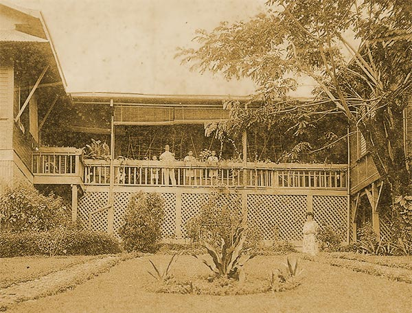

|
j
a v a s c r i p t |
January 22, 1942
On this very cold morning we were treated to a good exhibition of mock aerial combat by two light but highly maneuverable fighter planes. The pilots were good. The usual bombers also passed overhead on their way to work. KGEI said MacArthur stopped the Japanese again and even recovered some lost ground! This squares with a recent Tokyo announcement that Bataan was “too heavily fortified.” Coming from the Japanese, it’s proof of our heroic resistance. The Tribune quotes Tojo at length, offering the Philippines (and Burma) independence “so long as it cooperates and recognizes Japan's program of establishing a Greater East Asia Co-Prosperity Sphere.” He wished that the NEI, Australia and China would reconsider and join too. The Editorial wrapped up the propaganda effort with this: If 44 years ago we accepted America's promise of independence, now that we find ourselves in a similar situation, must we act differently? We paid P5 for some splendid leghorns that are now being peddled in the streets for one-third the price. Some are stolen, of course; the Yulo hacienda in Pampanga, for one, was cleaned out of thousands of leghorns. Others were dumped on the market before the Japanese could take them. Maurice bought a calesa rig and two horses for our chauffeur to drive on a sort of split basis. Our house is rapidly turning into a menagerie. There’s Dad, Ma, Maurice and I, two maids and a houseboy, plus a retired gardener and a chauffeur about to turn cochero ... that makes nine. Add the two horses, an orphaned parrot, a dog rescued from the brink of death after its master was interned, and a second cat (abandoned too), then 174 chickens and turkeys of varying ages. On our 3,300 square meters of land, we have a mango tree, one terrific eucalyptus tree, three tamarind trees, ten banana trees (only one giving fruit), three papaya trees; and soon, an incubator that we’ve been expecting every day for some weeks now. Before the war we never paid much attention to our tamarind trees. Now we make an exhilarating tamarind juice every day, and we’ve already got ten large bottles of preserves. We’ve also discovered that local guava jam is fantastic.

The Brimos line up in their Manga Avenue porch, prewar
L-R: Maurice (crouching), Henry, Antoine, Paul, Joseph, Josephine |
|
|
|
|